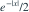
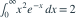

独立同分布样本的总体密度为

。样本量为 n，样本均值的方差为？- A
- B
- C
- D
我已思考，展开答案与解析
正确答案：B
- 对称性给出均值 0；二阶矩为

。独立均值的方差为总体方差除以 n。
易错提醒先明确分布参数、独立性和统计量的定义，再进行计算。
用户提供练手卷 · 原第 23 题；题目 PDF 第 4 页
单选改编；题干与选项已重新编排

。样本量为 n，样本均值的方差为？
。独立均值的方差为总体方差除以 n。用户提供练手卷 · 原第 23 题；题目 PDF 第 4 页
单选改编；题干与选项已重新编排